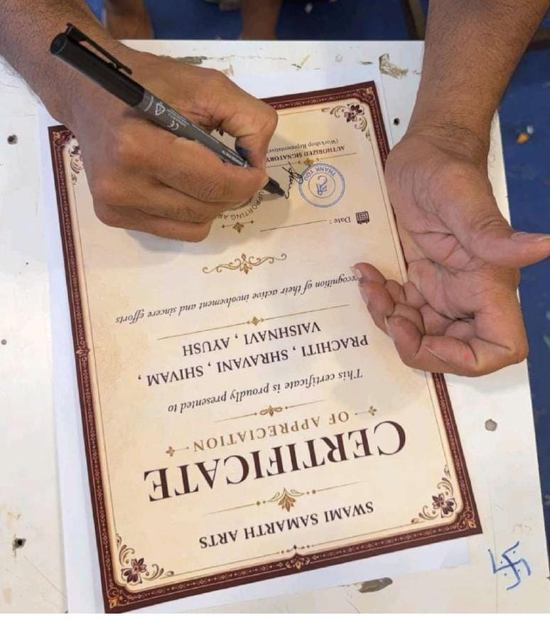

MOMENTS FROM OUR JOURNEY



FIELD JOURNEY
Our field visit helped us move beyond theory and experience artisan work directly.
We visited local workshops and observed artisans in their working environment.
We interacted with artisans and learned about their work, skills and creative process.
We documented the crafts through photographs, interviews and observations.
The visit helped us understand both the value of traditional craftsmanship and the challenges faced by artisans.

This certificate represents our field study, observations and interaction with the artisan community.